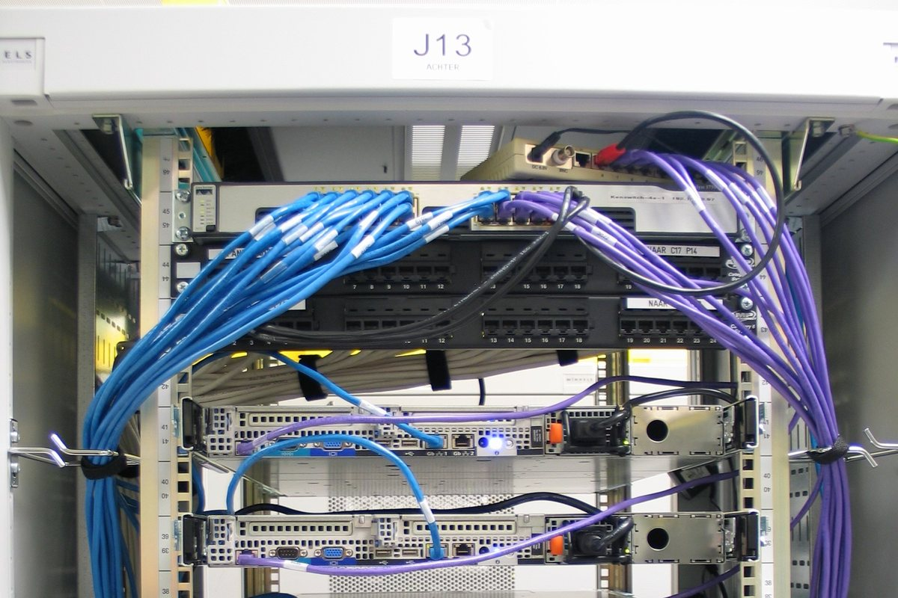

AI found two old holes in PHP. Governments pulled websites offline.
AI models helped uncover flaws that had sat for years in the language behind most of the web. The fix came out on October 21; attackers were already probing.


On October 21, the PHP project released emergency updates (8.5.12, 8.4.27, 8.3.36 and 8.2.35) for two critical flaws, CVE-2026-109618 and CVE-2026-109619, each rated 9.2 out of 10. Both are memory-safety bugs in PHP's core engine that can let an attacker with no account run code on a server, whatever website runs on top of it. PHP powers roughly 70 percent of websites whose language can be identified, according to W3Techs, including those built with WordPress. The affected code goes back at least to PHP 5.4, released in 2012.
AI did much of the finding. Calif, a security firm working under OpenAI's "Patch the Planet" programme for open-source software, found the first flaw with OpenAI's GPT-5.6 Sol model and reported it on August 11. Wiz, a security firm owned by Google's parent Alphabet, says it found the flaws independently about a week later, using its own agent, Google's Gemini 4 Argon and GPT-5.6 Sol, and reported them on August 24. Calif, Wiz and OpenAI are credited together.
The disclosure did not go to plan. The CVE identifiers began circulating online on October 20, and PHP moved its release forward by a day; Calif then mistakenly published a video, the PHP Foundation said. Amazon says its honeypots logged a first exploit attempt on October 17, four days before disclosure, and "broad exploitation attempts" after it. Cloudflare counted tens of thousands of attempts in the 45 minutes after the announcement and millions since, although watchTowr said none of the public exploits it saw achieved code execution.
Governments moved fast. The US National Security Agency advised organisations that could not update at once to take their sites offline until they could, and CISA urged immediate updates. Germany, France, Belgium, the Netherlands, Finland and the Czech Republic took some government websites offline as a precaution. On October 21, Censys counted about 1.57 million internet-facing PHP hosts still unpatched.
Why it matters
Security experts have long warned that AI would find serious flaws in old, widely used code. This time defenders found them first, and the fix was ready before disclosure. The margin was thin all the same: exploit attempts came before the patch, PHP 7.4 to 8.1 get only minimal source fixes, and older versions get none. OpenAI expects similar findings to rise sharply.
So does the PHP Foundation, a small nonprofit funded by donations, which warned that "the number of reports will keep growing." If AI keeps finding flaws at this pace, the scarce resource becomes the few people who fix them.
Sources: PHP Foundation · Wiz · OpenAI · AWS · Tenable · TechCrunch · The Next Web · The Next Web (2) · SecurityWeek · Al Jazeera, citing Reuters